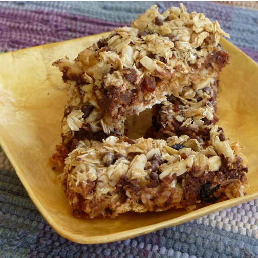

Granola Bars

Description
Fantastic bars that have a lot of flexibility.
You can adapt the recipe to your liking.
Great for hikes, long road trips and camping as they store well and keep fairly long - unless you eat them all!
Use any combination of chocolate chips, dried fruit, coconut, pecans, almond slices, or any other tidbits you'd like in a granola bar.
Originally from: allrecipes.com (new tab)
Ingredients
- 3 cups quick-cooking oats
- 1 (14 ounce) can sweetened condensed milk
- 2 tablespoons butter, melted
- 1 cup flaked coconut
- 1 cup sliced almonds
- 1 cup miniature semisweet chocolate chips
- 1/2 cup sweetened dried cranberries
Steps
- Preheat oven to 350 degrees F (175 degrees C). Grease a 9x13 inch pan.
- In a large bowl, mix together the oats, sweetened condensed milk, butter, coconut, almonds, chocolate chips and cranberries with your hands until well blended. Press flat into the prepared pan.
- Bake for 20 to 25 minutes in the preheated oven, depending on how crunchy you want them. Lightly browned just around the edges will give you moist, chewy bars.
- Let cool for 5 minutes, cut into squares then let cool completely before serving